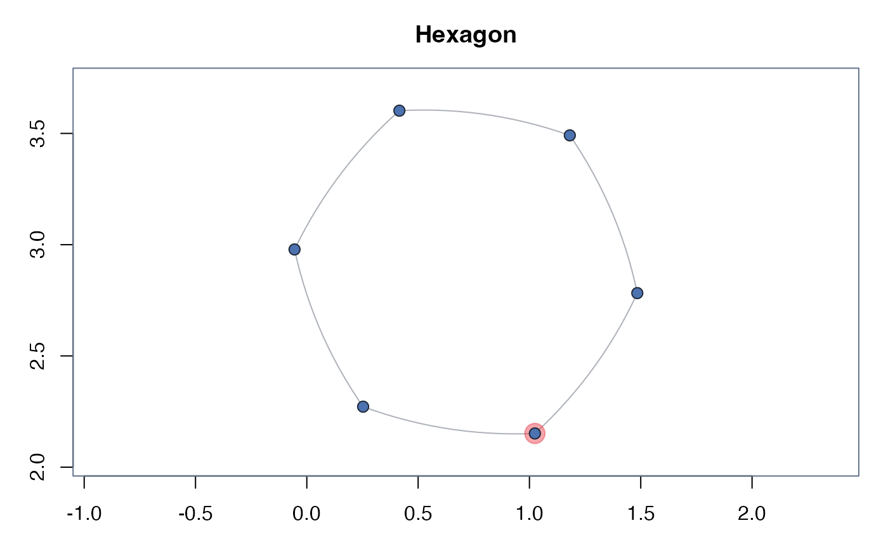

Draw a graph with base R graphics
plot_graph.RdDraws a graph using base R graphics without external dependencies, supporting vertex and edge filtering, highlight halos, curved edges, z-ordering, axes, directed arrows, and direct vector or raster file export.
Usage
plot_graph(graph, pos = NULL, vertex_color = "#4C72B0",
vertex_border = "#1F2937", vertex_size = 1.2, vertex_shape = 21L,
vertex_halo = FALSE,
vertex_halo_color = grDevices::adjustcolor("#E63946", 0.45),
vertex_halo_size = 2.2, vertex_visible = TRUE, vertex_label = NULL,
vertex_label_cex = 0.7,
edge_color = grDevices::adjustcolor("#4B5563", 0.45), edge_lwd = 1.0,
edge_curve = 0, edge_visible = TRUE, vorder = NULL, eorder = NULL,
arrows = NULL, arrow_length = 0.08, xlim = NULL, ylim = NULL, pad = 0.08,
bg = "white", axes = FALSE, frame.plot = axes, grid_lines = FALSE,
xlab = "", ylab = "", main = NULL, add = FALSE, output = NULL, width = 7,
height = 5, dpi = 150, ...)Arguments
- graph
A graph created by
graph_create.- pos
Optional \(N \times 2\) coordinate matrix; computed via
sfdp_layoutifNULL.- vertex_color
Vertex fill colour(s), recycled to length \(N\).
- vertex_border
Vertex border colour(s) for filled symbols (
pch %in% 21:25).- vertex_size
Vertex symbol size(s) (
cex).- vertex_shape
Vertex plotting symbol(s) (
pch).- vertex_halo
Logical vector indicating which vertices receive a highlight halo behind the vertex marker.
- vertex_halo_color
Halo colour(s).
- vertex_halo_size
Halo symbol size(s).
- vertex_visible
Logical mask hiding vertices (and their incident edges) when
FALSE.- vertex_label
Optional character vector of vertex labels.
- vertex_label_cex
Character expansion factor for
vertex_label.- edge_color
Edge colour(s), recycled to
graph_num_edges(graph).- edge_lwd
Edge line width(s).
- edge_curve
Numeric edge curvature (
0draws straight segments; non-zero draws quadratic Bezier curves).- edge_visible
Logical mask hiding edges when
FALSE.- vorder, eorder
Optional numeric ordering vectors controlling vertex and edge z-order (higher values are drawn on top).
- arrows
Logical or
NULL; whether to draw directed arrowheads. Defaults toisTRUE(graph$directed).- arrow_length
Arrowhead length in inches passed to
arrows.- xlim, ylim
Optional axis limits.
- pad
Fractional viewport padding added around
poswhenxlimorylimisNULL.- bg
Background colour.
- axes
Logical; whether to draw coordinate axes.
- frame.plot
Logical; whether to draw a box around the plot region.
- grid_lines
Logical; whether to draw faint coordinate grid lines.
- xlab, ylab
Optional axis labels when
axes = TRUE.- main
Optional plot title.
- add
Logical; if
TRUE, draw on top of the current plot.- output
Optional output file path; when non-
NULL, writes directly viasave_graph_plot(PDF, SVG, EPS, PNG, JPEG, TIFF).- width, height
Output figure dimensions in inches when
outputis supplied.- dpi
Raster resolution in dots per inch when
outputis a raster format.- ...
Additional arguments forwarded to
points.
Examples
g <- graph_create(6L, directed = FALSE)
graph_add_edges(g, cbind(c(1, 2, 3, 4, 5, 6), c(2, 3, 4, 5, 6, 1)))
set.seed(1)
plot_graph(g, vertex_halo = c(TRUE, rep(FALSE, 5L)), edge_curve = 0.1,
axes = TRUE, main = "Hexagon")
